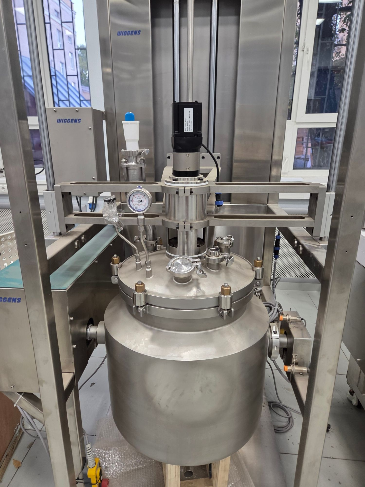

АО «ИНУМиТ» · проект обвязки · ред. 1 · 29.09.2026
Антиадгезив «ТЕФКОТ 770»: синтез на стальном реакторе 50 л
Технологическая схема, спецификация оборудования, гребёнка безопасности, уставки давления и порядок проведения синтеза. Основание: справка по техпроцессу (Терехов В.Е., Давыдов Д.А., 2026), требования А. Бабкина и Д. (переписка), фото реактора Wiggens и бака Atmaler БК-40.
1Главные решения
Загрузка ×3 от лабораторной (15 л петролейного эфира вместо 5). При 5 л реакционная масса на 50-литровом реакторе едва покроет мешалку и термопару. ×3 даёт ≈22 л массы, то есть заполнение ~45% с запасом под пену и отдувку.
Азотная ловушка заменяется стальным змеевиковым конденсатором E-1 на клампе крышки. Он охлаждается тем же теплоносителем, что и рубашка реактора, от чиллера TC-1. Жидкого азота и сухого льда в схеме нет. Этого хватает: при давлении в реакторе ≈1,06 бар абс. чистый метиламин конденсируется уже ниже −5 °C, а E-1 работает при −25 °C. На стадии 40 °C E-1 переключается на ледяную воду: растворитель возвращается в реактор, метиламин уходит в скруббер.
Метиламин вводится газом в газовое пространство реактора через штуцер T2, без погружной трубки. Он поднимается в конденсатор E-1 (−25 °C), конденсируется и жидким стекает в холодный растворитель (−20 °C). Часть поглощается растворителем прямо из газовой фазы. Выход E-1 не глухой, как в колбе, а через гребёнку.
Гребёнка по схеме Дани и замечаниям Бабкина: всё управление атмосферой реактора в одном месте. Коллектор DN15 (кламп 25) на тройниках, перед каждой веткой простой кран кламп. Ветки: манометр PI-4; ввод аргона ½″; шпунт-аппарат с обратным клапаном (рабочий регулятор); аварийный сброс 0,2 бар; сброс на атмосферу; вакуум. Гребёнка крепится отдельно на уголках к раме, к отводу E-1 идёт шлангом на ёлочках. Выходы шпунта и аварийного сброса идут через барботёр-индикатор (пузырьки видны), буферную склянку и кислотный скруббер.
Вакуумная защита — малый постоянный поток аргона через ротаметр с вентилем PR-1 (0,1–0,2 л/мин на синтезе, давление держит шпунт). Реактор никогда не уходит в вакуум и не подсасывает воздух или кислоту из скруббера. Поэтому сбросник, срабатывающий и на вакуум, в гребёнке не нужен (замечание Дани учтено).
Все давления ≤ 0,5 бар изб. Это ниже 0,07 МПа, то есть вне области ФНП ОРПД (приказ Ростехнадзора №536). Реактор, генератор и колонны не становятся поднадзорными сосудами. Главное — не поднять уставки выше.
Бак Atmaler БК-40 как генератор метиламина годен, но с доработкой: латунь и цинк заменить нержавейкой (амины разъедают медные сплавы, щёлочь растворяет цинк с выделением H₂), штатный предохранительный клапан дополнить низким сбросом 0,3–0,5 бар. Бак ставится в ванну с водой на весы.
Везде, где касается продукт или растворитель: трикламп + прокладки PTFE (требование Бабкина). EPDM только на воде, теплоносителе, щёлочи и водном метиламине. Фторкаучук (FKM/Viton) не применять нигде: метиламин его разрушает.
Два отклонения от лабораторной методики (обоснование в разделе 15):
дегазация пустого реактора вместо растворителя при 25 мбар: при 20 °C давление паров петролейного эфира 40–70 около 400 мбар, и при откачке до 25 мбар он просто выкипит в насос;
MeSiCl₃ и PDMS-OH подаются мембранным пневмонасосом P-3 прямо из тары (под аргоном, тара на весах W-4), а не шприцем через септу и не капельной воронкой (1,3 л шприцем нереально). Время дозирования задаёт температура в реакторе, а не час.

R-1 общий вид: рубашка, откидные болты крышки, стояк сзади слева
Пересчёт методики ×3. Если начальник решит иначе, все количества ниже (колонны, скруббер, соль, осушитель) масштабируются линейно.
Компонент
Лаб. (реактор 15 л)
×3 (реактор 50 л)
Комментарий
Растворитель — петролейный эфир 40–70 (углеводородная фракция, не диэтиловый растворитель)
5 л
15 л
+ промывки 2 × 3 л
NaOH твёрдый (в генератор)
2 790 г
8 370 г
+ NaOH в осушительную колонну C-2, ≈2 кг
Метиламин 38% водн.
3,48 кг (3,75 л)
10,44 кг (11,25 л)
содержит 3,97 кг CH₃NH₂
CH₃NH₂ сконденсировать, не менее
926 г
2 780 г
теоретически нужно 2 090 г (6 экв. на MeSiCl₃)
CH₃SiCl₃
558 г (438 мл)
1 674 г (1 314 мл)
11,2 моль
PDMS-OH JZH-203A
706 г
2 118 г
Na₂SO₄ б/в (слой на нутче)
2 кг
6 кг
≈4,5 л слоя
Соль CH₃NH₃Cl в осадке (расчёт)
≈0,75 кг
≈2,3 кг
нагрузка на нутч
Реакционная масса перед выгрузкой
≈7 л
≈22 л
заполнение 50-л реактора ~45%
Готовый 1% раствор (оценка)
≈115 кг
≈350 кг
нужно ~340 кг растворителя и тара на разбавление
Тепловые нагрузки ×3 (для выбора чиллера и хладагентов)
Конденсация метиламина: ≈2,8 кг за 3–4 ч → ≈0,7 моль/мин, это ~17 л/мин газа и ≈300 Вт тепла конденсации.
Дозирование MeSiCl₃ (аминолиз Si–Cl + образование соли): оценка ≈5 МДж. За 1 ч это 1,4 кВт, что на порядок выше того, что снимет рубашка при −20 °C. Поэтому дозируем по температуре (≤ −10 °C в массе), ожидаемо 3–5 ч. Кипящий метиламин переносит часть тепла на E-1 рефлюксом, но E-1 и рубашка сидят на одном чиллере, так что общий съём ограничен его мощностью: нужен чиллер ≥ 1 кВт при −25 °C.
Генератор: растворение 8,4 кг NaOH минус десорбция метиламина дают нетто ≈3 МДж за 3 ч (~300 Вт). Бак G-1 обязательно в ванне с холодной водой, иначе раствор разогреется и вынесет много воды на сита.
3Технологическая схема
Схема принципиальная, без масштаба. Позиции (R-1, G-1, PCV-1…) используются во всех таблицах ниже. Широкую схему можно прокручивать по горизонтали.
газ CH₃NH₂водн. метиламинаргонотдувка / сбросжидкость, продукттеплоносительвакуум
Кран SV-2 🔒 перед аварийным сбросом во время синтеза опломбирован в положении «открыто». SV-3 (сброс на атмосферу) открывать только при давлении ≥ 0 по PI-4.
4Реактор R-1 и распределение штуцеров
Что видно на фото: крышка на откидных болтах с латунными гайками; три кламповых штуцера (два под глухими заглушками, один открыт); Два обжимных штуцера 1/4″ на изогнутых трубках: на одном мановакуумметр WIKA −0,1…+0,5 МПа, на другом игольчатый вентиль. Сзади слева — трёхсоставной шаровой кран на клампах, сверху белый PTFE-переходник с синей заглушкой. Мешалка: мотор WB400, фонарь с белыми PTFE-кольцами, кронштейн на раме. Нижний слив: шаровой кран CF3M (литой 316L) на резьбе → переходник резьба–кламп → отвод 90° с ёлочкой.
Размеры клампов
По чертежу Wiggens штуцеры DN25/DN38 — ферула Ø50,5. Все клампы в проекте обозначены по DN (DIN 32676). Наружный диаметр ферулы: DN15 (½–¾″, «к25») — 25 мм, DN25 и DN38 (1½″) — 50,5 мм, DN40 — 64 мм, DN50 — 77,5 мм, DN65 (3″) — 91 мм, DN100 (4″) — 119 мм. Хомут и прокладка подбираются по диаметру ферулы, поэтому DN25 и DN38 (1½″) используют один и тот же хомут и прокладку.
По чертежу Wiggens 8813650C (Nozzle list)
Все штуцеры PN 0,5 (бар): M DN133 мешалка (по чертежу мотор WB1800-C, на реакторе стоит WB400; вал Ø26); L DN38 нижний слив; N1 DN25 резерв; N2 8 мм манометр; N3 DN25 конденсатор; N4 DN25 Pt100; N5 DN25 pH-датчик M300; N6 8 мм игольчатый вентиль; N7/N8 DN25 рубашка. Габариты: корпус Ø450, по откидным болтам Ø640, штуцеры крышки на окружностях Ø230 и Ø320 с шагом 30°, высота до верха мотора ≈1140 мм. Присоединения: все штуцеры — трикламп, DN указаны по DIN 11851. Для DN25 и DN38 это ферула Ø50,5: P1–P4, слив и рубашка. Размеры штуцеров принимаем по таблице Wiggens.
Сопоставление: P1 = N3, P2 = N4, P3 = N5 (pH-датчик нам не нужен, штуцер под дозирование P-3), P4 = N1, T1 = N2, T2 = N6 (по чертежу это игольчатый вентиль — проверить, есть ли под ним погружная трубка), BV-1 = L, рубашка = N7/N8.
Штуцер
Где (по фото 2)
Размер (фото / Wiggens)
Назначение
Что ставим
P1
кламп спереди, под глухой заглушкой
DN25 (N3)
конденсатор E-1 и отдувка на гребёнку
E-1 (раздел 6) напрямую на кламп, прокладка PTFE
P2
малый открытый кламп спереди справа
DN25 / DN25 (N4)
температура в массе
кламповая заглушка DN25 с приварной термогильзой Ø8, L≈500 мм (по 3D-модели: при 15 л уровень всего ≈90 мм над днищем цилиндра, гильза 300 мм не достанет до жидкости), внутри Pt100 → вход на чиллер (внешний датчик) или отдельный термометр
P3
кламп сзади справа, под глухой заглушкой
DN25 / DN25 (N5)
дозирование MeSiCl₃ и PDMS-OH; резервная загрузка растворителя
переход DN25→DN15, шаровой кран DN15, тройник с септовой заглушкой (проба, шприц), далее трубка от P-3
P4
сзади слева: трёхсоставной шаровой кран на клампах, сверху PTFE-переходник с синей заглушкой
замерить / DN25 (N1)
резерв (кран уже есть)
оставить как есть: резервный штуцер с краном. Если игольчатый вентиль T2 будет душить газ — ввод метиламина сюда
T1
обжим 1/4″ на изогнутой трубке, мановакуумметр WIKA
1/4″
давление в реакторе
оставить PI-1. Шкала −0,1…+0,5 МПа (−1…+5 бар): для 50–80 мбар грубая, одно малое деление около 0,1 бар. Рабочий контроль — пузырьки в BU-1; при желании заменить на мановакуумметр −1…+0,6 бар или −100…+300 мбар (опция в спецификации)
T2
игольчатый вентиль 8 мм (N6)
8 мм / ¼″
ввод газа CH₃NH₂ в газовое пространство (погружной трубки нет)
трубка PTFE 10×12 от колонн через переход на ¼″. Вентиль при подаче открыт полностью. Если он душит поток (на стенде перепад больше 20 мбар при 10 л/мин), ввод переносим на резервный штуцер P4 (DN25)
BV-1
нижний слив: шаровой кран CF3M на резьбе
резьба? / DN38 (L)
выгрузка суспензии, отбор проб, загрузка растворителя снизу
после крана уже стоят переходник резьба–кламп и отвод с ёлочкой. Между ними ставим тройник с краном отбора SP-1 (DN15), далее рукав на P-2
Шильдик: допустимое давление и допустимость полного вакуума. Нам нужно −975 мбар (25 мбар абс.) … +200 мбар.
Уплотнение крышки (большое кольцо под откидными болтами): если силикон или EPDM, заменить на кольцо в оболочке FEP или PTFE-конверт. Пары растворителя и метиламина идут прямо на него.
Уплотнение вала мешалки: тип и материал (манжета PTFE, торцевое, магнитная муфта?). Под вакуумом 25 мбар должен держать без подсоса.
Материал корпуса: желательно AISI 316L. Хлорид метиламмония во влажной среде даёт питтинг, поэтому после каждой партии реактор промыть водой и высушить.
5Генерация и сушка метиламина
5.1 Генератор G-1 (бак Atmaler БК-40)
На крышке бака сейчас: блок редуктора воздуха (латунь, манометр 0–10 бар, штатный предохранительный клапан, краны с зелёными ручками), пневмомешалка по центру, выход краски с сифонной трубкой до дна, быстроразъём, загрузочный лючок.
Узел бака
Что делаем
Почему
Внутренняя поверхность
По фото внутри съёмный нержавеющий вкладыш (ведро) — для NaOH годится. Проверить магнитом крышку снизу и мешалку: если алюминий или окрашенная сталь, их касаются пары метиламина и брызги щёлочи. Крыльчатка мешалки белая пластиковая — узнать материал (PP годится)
NaOH и водный метиламин разрушают алюминий и цинк с выделением H₂
Блок редуктора воздуха (латунь)
Снять целиком. Отверстие закрыть нержавеющим переходником: резьба → кламп DN15 → линия аргона A2 и PSV-3
Метиламин с влагой разрушает латунь. Редуктор нам не нужен, давление задаёт сам процесс
Штатный предохранительный клапан
Оставить как последний рубеж (если нержавеющий). Добавить PSV-3 на 0,3–0,5 бар со сбросом в T-1/S-1
Штатный сработает при ~5–6 бар: колонны и PTFE-линии столько не держат
Выход краски (сифон до дна)
Сейчас на нём латунный тройник с двумя кранами (красные ручки). Заменить на нержавеющие: переходник резьба → кламп DN15 → кран. Использовать как ввод водного метиламина, трубка PTFE или EPDM
Раствор подаётся под слой щёлочи, газ выделяется равномерно, без брызг на крышку. Латунь в метиламине корродирует
Выход газа
Через свободный штуцер или лючок: нержавеющий переходник на DN15 + кран V-G1
Пневмомешалка
Первые запуски не включать. Уплотнение вала проверить мыльным раствором под 0,3 бар аргона. Если пропускает, снять и заглушить
Утечка метиламина через вал. Мешалка полезна в конце для «дожима» газа
Прокладка крышки
Заменить на EPDM
Стойкость к щёлочи и аминам
Манометр
Добавить PI-3: мановакуумметр −1…+0,6 бар, нержавеющий
Штатный 0–7 бар не показывает наши 0,1–0,3 бар
Бак ставится в пластиковую ванну (таз ~60 л) с холодной водой, а ванна — на весы W-2 (до 60 кг, дискретность 5–10 г). Убыль массы G-1 — это масса ушедшего метиламина (плюс немного воды). Так проверяется «не менее 2 780 г» без гадания. Канистра V-1 с раствором стоит на своих весах W-1 и показывает, сколько раствора подано.
Продувка G-1 от воздуха: бак, скорее всего, не рассчитан на вакуум, поэтому продуваем аргоном потоком. 5–6 объёмов ≈ 250 л при 10–15 л/мин, около 20 мин, выход через C-1 → C-2 → байпас в вытяжку, до подключения к реактору.
5.2 Дозирование водного метиламина
P-1 — пневматический мембранный насос (предложение Бабкина, перистальтика не используется). Это второй экземпляр той же модели, что P-2: один насос на водный метиламин и на безводный продукт использовать нельзя, остатки воды гидролизуют продукт. Нужно подать 11,25 л за 3–4 ч, то есть 50–60 мл/мин. Для такого насоса это нижний край, поэтому подача задаётся тремя способами вместе: фильтр-регулятором воздуха (давление 1–2 бар, редкие ходы), игольчатым вентилем на нагнетании и контролем по весам W-1. Подача идёт порциями на каждый ход, для генератора это допустимо. Исполнение: корпус PP, мембраны и шары PTFE (38% метиламин). Присоединения: резьба ? → ёлочка под рукав EPDM. Выхлоп воздуха — в вытяжку. Всасывание из канистры V-1 через крышку с двумя штуцерами: заборная трубка и «дыхание», причём дыхание через трубку в ту же вытяжку, так как метиламин из 38% раствора сильно летуч. На нагнетании обратный клапан, чтобы при остановке насоса газ из бака не выдавливал раствор назад.
5.3 Осушка: колонны C-1 и C-2
Поз.
Конструкция
Заполнение
Заметки
C-1
Патрубок DN65 × 600 мм (≈2,5 л), концы: заглушка-переход DN65→DN15; внизу сетчатая кламповая прокладка + диск сетки AISI 316
молекулярные сита 3A, ≈1,8 кг (полностью), прокалка 300 °C сутки
Именно 3A: поры 4A и 5A сорбируют метиламин (кинетический диаметр ~3,7 Å), выход упадёт. Ёмкости по воде (~350 г) хватает с большим запасом: с газом уходит ~25 г воды за партию
C-2
То же, DN65 × 600 мм
NaOH гранулы (или KOH, он лучше сушит амины), ≈2,7 кг
Порядок как в методике: газ снизу вверх, сначала сита, потом щёлочь
Из чего собрана каждая колонна (всё — стандартные кламповые детали Гросснер, сварки нет)
Корпус: царга кламп 3″ — труба 76,2×1,6 AISI 316 с ферулами DN65 на обоих концах. C-1 и C-2 длиной 600 мм (≈2,5 л).
Низ и верх: заглушка-переход кламповая DN65 → DN15 (концентрический переход 3″ → ¾″). Снизу вход газа, сверху выход.
Удержание засыпки (C-1, C-2): между корпусом и нижней заглушкой — сетчатая кламповая прокладка DN65 плюс диск сетки AISI 316 с ячейкой до 1 мм. Такая же сверху — чтобы пыль сит и щёлочи не уносило в реактор.
Хомуты: DN65 — 2 шт., DN15 — 2 шт. на колонну. Крепление — 2 хомута-держателя Ø76 на стойку.
Загрузка: снять верхний хомут, засыпать сита (C-1, ≈1,8 кг, горячими под аргоном) или гранулы NaOH/KOH (C-2, ≈2,7 кг), закрыть.
По сути это две трубы по 60 см, заполненные доверху: одна ситами, вторая щёлочью. В лаборатории их роль играли две двухлитровые колбы с насадками Дрекселя. Чертёж — лист 5 монтажных чертежей.
Газ во всех колоннах идёт снизу вверх. Колонны крепятся вертикально на стойке к раме или лабораторному стенду. На выходе C-2 стоят кран V-G2 и обратный клапан NRV-3 с малым давлением открытия (≤ 30 мбар), например Swagelok серии CH с пружиной 1/3 psi. Клапан на 0,1 бар здесь не подходит: генератору пришлось бы держать лишние 100 мбар. Затем линия PTFE 10×12 в штуцер T2 — в газовое пространство реактора, откуда метиламин конденсируется на E-1 и стекает в растворитель.
Защита от обратного заброса
При остановке подачи холодный растворитель продолжает поглощать метиламин, и давление в реакторе и газовой линии падает. Погружной трубки нет, поэтому растворитель в линию не засосёт. Но влажный газ из генератора не должен уйти в реактор, а воздух — в генератор. Держат три вещи: NRV-3, аргоновая подпитка G-1 через A2 (генератор не уходит в вакуум) и малый постоянный поток аргона в реактор через PR-1.
6Конденсатор E-1 («холодный палец» на клампе)
Стальная замена лабораторной азотной ловушки. Охлаждается от того же чиллера, что и рубашка. Криогенные жидкости не нужны.
Почему хватает −25 °C
Температура
Давл. паров CH₃NH₂, бар
Что это значит
−6 °C
1,0
точка кипения; ниже неё чистый газ при ~1 бар конденсируется полностью
−10 °C
0,72
−20 °C
0,43
масса в реакторе по методике
−25 °C
0,33
рабочая температура E-1 и рубашки
−30 °C
0,25
если чиллер позволяет — ещё лучше
Метиламин приходит в реактор практически чистым газом. Всё, что не поглотил растворитель, конденсируется на E-1 и холодных стенках. Теряется метиламин только вместе с инертным газом, который уходит через шпунт. На выходе E-1 при −25 °C в нём ≈31% метиламина (0,33 / 1,06). Инертного газа за стадию уходит ~65 л: аргон из газового пространства реактора (~28 л) и из бака-генератора после продувки (~35 л). Значит, потери ≈29 л газа ≈ 37 г, то есть ~1,3% от 2,8 кг.
Условие: во время конденсации аргон не течёт постоянно
Во время подачи метиламина поток аргона через PR-1 держать минимальным, 0,1–0,2 л/мин. Газ после E-1 при −25 °C содержит около 40 % метиламина, поэтому каждый литр аргона уносит через шпунт ~0,7 л метиламина. При 0,2 л/мин за 3,5 ч это ~40 г из 2,8 кг, допустимо. При 1 л/мин было бы ~200 г. Продувка газового пространства и генератора большим потоком — только до начала и после конца подачи метиламина.
Конструкция E-1 (изготовление под заказ, 316L)
Деталь
Размер
Примечание
Кожух
труба 76,2×1,6 (3″), L = 500 мм
вертикально; снизу переход-концентрик 3″→1″ с ферулой DN25 под P1 (N3, DN25). Конденсат стекает в реактор
Боковой отвод газа
ферула DN15, на 40 мм ниже верха
выход на гребёнку
Верх кожуха
ферула DN65 + глухая заглушка DN65
в заглушку вварены 2 проходных штуцера 12 мм под концы змеевика; разборно, змеевик вынимается целиком
Змеевик
трубка 316L 10×1, L ≈ 3 м, навивка Ø55 мм, шаг 20 мм (~17 витков, высота ~350 мм)
поверхность ≈0,09 м²; при ΔT ≈ 20 К съём ~0,5 кВт, этого с запасом хватает на конденсацию (~0,3 кВт)
Подключение теплоносителя
обжим 12 мм → ёлочка 12 мм → рукав EPDM в изоляции
вход сверху в центральный вывод, выход — второй
Изоляция
вспененный каучук 13–19 мм снаружи кожуха
иначе конденсат воды и обмерзание
Вариант без сварки: готовый вертикальный теплообменник «труба в трубе» или кожухотрубный на клампах (у пивоваров это охладитель сусла). Газ идёт по внутренней трубе, теплоноситель — в рубашке. Уточнить у Гросснера наличие и материал уплотнений.
Подключение к чиллеру
Стадии 1–6 (вариант Б, один чиллер — базовый): E-1 параллельно рубашке. TC-1 → тройник → две ветви (рубашка через кран CV-J, E-1 через кран CV-E) → тройник → возврат в TC-1. Кран на рубашке прикрыть, если E-1 «недополучает» поток; расход по E-1 2–4 л/мин.
Стадия 7: рубашка переходит на +40 °C, а E-1 должен остаться холодным (+2…+5 °C), чтобы возвращать растворитель и пропускать метиламин. Один чиллер двух температур не даст, поэтому E-1 отключается от TC-1 кранами CV-E и переключается двумя 3-ходовыми кранами на контур ледяной воды IW-1: бак 20–30 л с водой и льдом + погружной насос 10–15 л/мин. Если лёд неудобен — водопроводная вода (10–15 °C): потери растворителя вырастут примерно вдвое, ≈0,5 кг за стадию.
Вариант А (лучше, если найдётся второй чиллер TC-2): E-1 на отдельном малом циркуляционном охладителе (−30…+20 °C, 0,3–0,5 кВт). Тогда E-1 работает при любой нужной температуре на всех стадиях, без переключений, а вся мощность TC-1 идёт на рубашку. Дозирование MeSiCl₃ станет короче.
Не забыть на стадии 7: если E-1 останется на −25 °C, метиламин будет конденсироваться и возвращаться в реактор, и стадия не закончится.
7Гребёнка и скруббер
По схеме Дани с поправками Бабкина. Всё управление атмосферой реактора (сброс, аргон, вакуум, атмосфера) собрано в одном месте. Коллектор и краны DN15 (кламп 25, «к25»): для наших объёмов этого достаточно. Краны простые, кран кламп Гросснер. Шпунт-аппарат выпускается на 50,5, поэтому перед ним стоит переход DN15→DN25. Отвод газа E-1 сразу делаем DN15, перехода там нет.
Монтаж. Гребёнка собирается отдельно и крепится на уголках к раме Wiggens: на крышку реактора она не вешается, слишком тяжело. С отводом E-1 гребёнка соединяется шлангом на ёлочках (или на ½″). Место и крепление определяются по месту. Если консоль окажется хлипкой, перевешиваем.
Ветка (слева направо)
Кран
Устройство
Уставка
Роль
PI-4
—
Манометр мембранный 0–250 мбар, кламп DN15
—
Давление в реакторе в рабочем диапазоне. PI-1 на крышке и манометр шпунта для 50–200 мбар грубые
Обратный клапан NRV-1 стоит последовательно со шпунтом, поэтому их уставки складываются. Нужен клапан с открытием не выше 30 мбар, тогда рабочее давление будет 80–110 мбар, ниже аварийного сброса 200 мбар. Перевёрнутый KF25-клапан из первого варианта в гребёнку не входит. Его можно проверить на стенде как NRV-1: если откроется ниже 30 мбар, ставим его.
Почему клапан давления-вакуума нельзя ставить «как есть»
При разрежении в реакторе он откроется и потянет газ из общего коллектора, то есть из скруббера. Метиламин поглощается кислотой очень жадно, и при подсосе кислота пойдёт в реактор с хлорсиланом. Если другого сбросника не найти, после этого клапана обязательно поставить обратный клапан по ходу сброса. Тогда уставка будет ≈0,2 + 0,1 = 0,3 бар, что допустимо. Лучший вариант — чисто предохранительный клапан на 0,2–0,3 бар.
Коллектор сбросов → BU-1 → T-1 → S-1
BU-1, барботёр-индикатор (ответ на вопрос «пузырьки непонятно, как приколхозить»): все выходы сходятся в один коллектор, а он опущен на 1–2 см в силиконовое масло (ПМС-50) в прозрачном сосуде. Любой сброс через любое устройство виден пузырьками. Сосуд — стеклянная склянка Дрекселя 500–1000 мл или прозрачный патрубок-фонарь DN25 со стеклом (Гросснер, «смотровой фонарь»); ввод трубкой PTFE. Противодавление ≈1–2 мбар.
S-1, скруббер: канистра PE 20 л, 12 л раствора, 2,5 кг лимонной кислоты (моногидрат) + фенолфталеин. Хватит на ≈35 моль метиламина, то есть весь избыток ×3 (≈22 моль) с запасом. Ввод — PTFE трубка с просверленными отверстиями на дно, выход газа — в вытяжку. Раствор порозовел — кислота кончилась, долить. Лимонная кислота безопаснее серной и не дымит.
В тот же T-1/S-1 заведён сброс PSV-3 генератора и выхлоп вакуумного насоса.
8Аргоновая и вакуумная линии
Аргон
AR-1: баллон 40 л, аргон 99,998% (ГОСТ 10157, высший сорт), на цепи к стене.
Редуктор баллона (стоит GCE DINOX O3-10): выставить на минимум, 0,2–0,3 бар. Отдельной позиции не имеет — это часть баллона.
PR-1: ротаметр с игольчатым вентилем, как на лабораторной панели. Регулирует расход, а не давление. На синтезе — малый постоянный поток 0,1–0,2 л/мин: давление в реакторе держит шпунт, лишний аргон уходит через него и заодно не даёт воздуху зайти при охлаждении. На продувках 3–5 л/мин, при выкачке продукта насосом до ~10 л/мин (иначе реактор уйдёт в разрежение).
PSV-2: предохранительный клапан 0,5 бар после редуктора баллона на случай его отказа. Защищает прежде всего стеклянную тару MeSiCl₃ (линия A3): у неё своей защиты нет.
Раздаточный коллектор из 4 шаровых кранов 1/4″ (обжим): A1 → гребёнка, кран AV-1 (через NRV, переходник ¼″ → G½″); стояк P4 теперь резерв под глухой заглушкой; A2 → G-1 (через NRV), A3 → тара MeSiCl₃ / PDMS-OH (занимает объём ушедшей жидкости), A4 → нутч F-1 и тара.
Трубка PTFE 6×8 или 1/4″ нерж. Обратные клапаны на A1 и A2 обязательны: без них метиламин уходит в аргоновую линию и дальше в соседние аппараты.
Вакуум
VP-1: химический мембранный насос с PTFE-головками, ≤ 7–10 мбар, 1,5–2 м³/ч (типа Vacuubrand MZ 2C NT или аналог). Масляный пластинчато-роторный не годится: его масло растворит растворитель и поглотит амин.
CT-1: пустая склянка-сепаратор перед насосом (защита от капель). Охлаждаемая ловушка не нужна: вакуумируем только пустой сухой реактор и пустой нутч, растворитель под вакуумом не откачиваем.
Подключение: кран VV-1 на коллекторе отдувки после E-1. Вакуумируем реактор через E-1. Нужен и для нутча F-1 (10 мбар), для него отдельная линия через A4-тройник.
Выхлоп насоса — в вытяжку.
Во время вакуумирования краны гребёнки SV-1, SV-3 и AV-1 закрыты, в том числе опломбированный SV-2 (единственный разрешённый случай). Открыт только VV-1. Вакуумирование только пустого реактора.
9Дозирование MeSiCl₃ и PDMS-OH
1,3 л метилтрихлорсилана через септу шприцом на 50-литровом реакторе — долго, опасно (HCl на воздухе) и невоспроизводимо. Капельную воронку тоже не используем. Подача идёт насосом P-3 прямо из тары (промежуточной ёмкости нет) (такой же мембранный пневмонасос Бабкина, как P-1 и P-2, отдельный — чтобы хлорсилан не встречался с водным метиламином и продуктом):
Тара MeSiCl₃ / PDMS-OH стоит на весах W-4 в поддоне, в вытяжке. Скорость подачи видна по убыли массы. На горловину ставится крышка-переходник с двумя вводами (PTFE, под резьбу горловины): заборная трубка PTFE до дна и ввод аргона A3. Аргон занимает объём ушедшей жидкости. Без него в тару засасывается влажный воздух, и MeSiCl₃ гидролизуется с выделением HCl.
Цепочка: тара → заборная трубка → кран V-B1 (1/4″) → трубка PTFE → P-3 (вход) → P-3 (выход) → игольчатый вентиль FV-1 1/4″ → обратный клапан NRV-4 → трубка PTFE 1/4″ через P3, срез в 5–10 см над уровнем жидкости (не под слой: соль CH₃NH₃Cl забьёт трубку). NRV-4 не даёт газу реактора (метиламин!) уйти назад к хлорсилану.
Регулировка: давление воздуха на P-3 — минимальное устойчивое (1–2 бар через фильтр-регулятор), тонко — FV-1. Мембранник на малых подачах работает рывками; при 4–7 мл/мин это нормально, по W-4 смотрим среднюю скорость за 5 мин.
Установка крышки-переходника на тару MeSiCl₃: в вытяжке, под током аргона через A3. Хлорсилан дымит на влажном воздухе. Масса MeSiCl₃ (1 674 г) отсчитывается по W-4, лишнее остаётся в таре.
Скорость MeSiCl₃: по температуре, ориентир 4–7 мл/мин. Держать ≤ −10 °C в массе (TI на P2); при −5 °C стоп (закрыть FV-1, сбросить воздух P-3). Ожидаемо 3–5 ч.
После MeSiCl₃ закрыть V-B1 и тару, P-3 водой не мыть. Переставить крышку-переходник на бутыль сухого петролейного эфира и прокачать 0,5 л в реактор, затем — на тару PDMS-OH (2 118 г по W-4) и подавать 35–70 мл/мин, 30–60 мин.
Мембраны и шары P-3 — PTFE; корпус 316 или PP (хлорсилан + следы влаги дают HCl — алюминий нельзя). После партии P-3 промыть эфиром и продуть аргоном, хранить сухим с заглушками.
Отбор пробы для pH (стадия 6): через SP-1 на нижнем сливе при работающей мешалке. Сначала слить 20–30 мл «мёртвого объёма» в отдельную склянку (вернуть или утилизировать), затем 1 мл в пробирку с водой. Альтернатива — шприц через септовую заглушку на P3.
10Термостатирование
TC-1 (чиллер): нужен диапазон −30…+50 °C и холодопроизводительность ≥ 0,8–1 кВт при −20 °C. Проверить, какой чиллер Wiggens или какой есть в лаборатории: у многих лабораторных при −20 °C остаётся 30–40% номинала.
Теплоноситель: водно-спиртовой (этанол 40–50%), водно-гликолевый −35 °C или силиконовое масло по паспорту чиллера. На −25 °C чистая вода не годится.
Рукава: EPDM армированные, ID под ёлочки рубашки, в теплоизоляции 13 мм, хомуты нерж. по 2 на соединение. Вход снизу, выход сверху (так и сделано на реакторе).
Управление по внутренней температуре: если чиллер умеет работать по внешнему датчику, подключить Pt100 из гильзы P2. Иначе чиллер работает по своей температуре, а TI в массе читается отдельно.
корпус PP (лучше токопроводящий PP) или нерж. 316; не алюминий;
мембраны и шары PTFE, седла PP/PTFE/нерж.;
клемма заземления на корпусе;
воздух: 3–6 бар, через фильтр-регулятор с маслоотделителем. Выхлоп увести в вытяжку: при разрыве мембраны в выхлоп пойдёт растворитель.
Насосом P-2 делаем (P-1 — такой же, только на водный метиламин; P-3 — такой же, только на дозирование MeSiCl₃ и PDMS-OH; три одинаковых насоса — одни запчасти): загрузку растворителя в реактор снизу через BV-1 (меньше брызг и статики), выгрузку суспензии на нутч, перекачку концентрата через F-2 в канистры.
Нутч F-1 (под аргоном)
Под ×3 нужна площадь ≥ 700 см² (DN300) и объём ≥ 30 л: 6 кг Na₂SO₄ (≈4,5 л), ≈2,3 кг соли, 22 л суспензии и 6 л промывок. Если есть только лабораторный нутч, фильтровать в 3 приёма, меняя слой. Нутч закрытый и аргонируется всё время:
Аргон A4: от распределителя аргона → кран V-F1 → обратный клапан NRV-5 → штуцер на крышке F-1. NRV-5 не пускает пары растворителя в аргонную линию.
PI-5 — мановакуумметр на крышке (−1…+0,6 бар).
PSV-4 — сбросной 0,3 бар на крышке, выход в T-1 (вторым входом, по трубке). Защищает нутч, если P-2 подаёт в закрытый нутч быстрее, чем уходит фильтрат.
VV-2 — кран вакуума на крышке: 10 мбар только для инертизации пустого нутча (2 цикла вакуум/аргон, как в методике).
Саму фильтрацию вести под давлением аргона 0,1–0,2 бар (по PI-5): при вакуумной фильтрации растворитель (т. кип. от 40 °C) выкипает в насос, а охлаждаемой ловушки в схеме нет. Фильтрат — вниз, в приёмник под аргоном, затем через F-2.
Материал мембраны: PTFE (гидрофобный, стоек к растворителю и аминам) или PP для 2–5 мкм. PES допустим. Нейлон и ацетат целлюлозы не брать.
Уплотнительные кольца патрона и корпуса: у Гросснера по умолчанию обычно силикон или EPDM. Заказать кольца в оболочке FEP (FEP/силикон) под тот же размер. Уточнить тип посадки патрона (код 7/226, 222 или DOE) и брать патроны под него.
Порядок: проход 5 мкм, затем 0,2 мкм как финиш. Использовать 0,05 мкм только если по ОТК нужен. Если одного корпуса мало (два прохода), предлагаю второй корпус и ставить последовательно 5 → 0,2.
Статика на фильтре
Микрофильтрация углеводорода — один из сильнейших генераторов статического заряда. Корпус F-2, насос, рукава и канистры заземлить единой шиной. Скорость в трубке ≤ 1 м/с. После фильтра — ≥ 1 м заземлённой металлической трубы или рукава перед канистрой (время релаксации). Налив в канистру трубкой до дна.
Фасовка
Канистры на весах W-3 (до 30–60 кг, дискретность 5–10 г). Расчёт по методике (п. 10): тара — по минимальной массе из серии, затем растворитель, затем концентрат насосом P-2 через F-2. Канистры металлические, с зажимом заземления.
12Материалы: уплотнения и шланги
Среда
PTFE/FEP
EPDM
Силикон
NBR
FKM (Viton)
Сталь 316
Петролейный эфир
✔
✘
✘
✔
✔
✔
CH₃NH₂ газ / р-р
✔
✔
±
±
✘
✔ (Cu, латунь, Zn, Al — ✘)
CH₃SiCl₃ (+HCl)
✔
✘
✘
✘
±
✔ сухой
NaOH р-р
✔
✔
±
±
±
✔
Реакционная масса
✔
✘
✘
±
✘
✔
Вывод: на всё, что касается растворителя, продукта и хлорсилана, — только PTFE/FEP. EPDM разрешён на воде, теплоносителе, щёлочи и водном метиламине.
Рукав PTFE гладкоствольный 3/4″ (ID 19) в нерж. оплётке, антистатический (чёрный токопроводящий лайнер), с заводскими клампами DN15/DN25. Длины 1,5 и 2,5 м
кламп
PTFE
Газ CH₃NH₂, аргон, отдувка, дозирование MeSiCl₃
Бухта трубки PTFE (Ф-4) 10×12 и 6×8 мм, 20 м + 10 м
обжимные фитинги нерж. 12 мм / 8 мм + переходник кламп→резьба
Бухта EPDM армированного рукава ID 12 и ID 19 (под ёлочки рубашки), 10 м + 10 м; изоляция на теплоноситель
клампы с ёлочкой + 2 нерж. хомута на соединение (как предложил Д.)
EPDM
Сжатый воздух на P-2 и мешалку G-1
PU 8×6 / 10×8
быстроразъёмы
—
Про ёлочки и бухту (запрос Д.)
Ёлочка с хомутом надёжно работает на EPDM. На PTFE-трубке ёлочка не держит (PTFE жёсткий и «течёт» под хомутом), поэтому для бухты PTFE используются обжимные фитинги, по сути та же быстрая сборка. Бухта EPDM + клампы-ёлочки закрывают все водные и щелочные линии. Бухта PTFE + обжим закрывает газовые линии. Для продукта нужен готовый рукав PTFE на клампах: кроме стойкости, он антистатический, а на растворителе это обязательно.
13Уставки давления
Поз.
Что
Уставка, мбар изб.
Замечание
—
редуктор баллона аргона
200…300
минимальная устойчивая уставка GCE; расход задаёт PR-1: на синтезе 0,1–0,2 л/мин
BU-1+S-1
противодавление сброса
≈10–15
прибавляется к уставкам всех устройств
PCV-1 + NRV-1
шпунт-аппарат с обратным клапаном, рабочий
50…80 + ≤30
«минимальное» (Бабкин). Итого 80–110 мбар; минимальную устойчивую точку найти на стенде
PSV-1
аварийный
200
SV-2 опломбирован открытым
NRV-3
вход газа в реактор
≤ 30
генератор работает при 100–250 мбар
PSV-3
генератор G-1
300…500
при росте выше 250 — остановить P-1
PSV-2
аргон после редуктора баллона
500
PSV-4
нутч F-1
300
фильтрация под аргоном 100–200 по PI-5
—
граница ФНП ОРПД (приказ №536)
700
не превышать ни в одном аппарате
Стендовая проверка гребёнки до монтажа на реактор: собрать коллектор на заглушке с манометром PI-4 и тройником аргона, подать аргон через игольчатый вентиль и по очереди, открывая только один SV, записать давление открытия и закрытия каждого устройства. Особенно шпунта на минимуме вместе с NRV-1 (и перевёрнутого KF25, если пробуем его вместо NRV-1). Так мы получим фактические, а не паспортные уставки.
14Спецификация
КУПИТЬ — заказать; ИЗГОТОВИТЬ — сварка под заказ; ЕСТЬ — в наличии, проверить. Количества — ровно по схеме; расходники (хомуты, прокладки, ёлочки, фитинги) — по схеме + 2 шт. каждого размера. Краны, клапаны и приборы — без запаса: не хватит — дозакажем. Размеры клампов подтвердить замером (раздел 4).
Поз.
Наименование
Характеристика
Кол.
Статус
Реактор R-1
R-1
Реактор Wiggens 50 л с рубашкой и мешалкой
проверить шильдик: давление, вакуум
1
ЕСТЬ
Кольцо уплотнения крышки FEP-оболочка
по размеру штатного
2
КУПИТЬ
Заглушка DN25 с приварной термогильзой Ø8×500
316L
1
ИЗГОТОВИТЬ
PI-1
Мановакуумметр −1…+0,6 бар (или −100…+300 мбар), Ø100, нерж., на обжим 1/4″ — вместо WIKA −1…+5 бар
опционально: штатный груб для 50–80 мбар
1
УТОЧНИТЬ
Термометр сопротивления Pt100 Ø6 + индикатор/вход чиллера
−50…+100 °C
1
КУПИТЬ
Переход DN25→DN15 (для P3)
1
КУПИТЬ
Тройник DN15 + септовая заглушка (DN15 с 1/4″ и септой GC)
1
КУПИТЬ
Генератор и осушка метиламина
G-1
Бак Atmaler БК-40
доработка по разделу 5.1
1
ЕСТЬ
Прокладка крышки бака EPDM
по размеру
1
КУПИТЬ
Переходники нерж. резьба (по штуцерам бака) → кламп DN15
3
КУПИТЬ
Ёлочка нерж. вместо латунной на сифоне
1
КУПИТЬ
PI-3
Мановакуумметр −1…+0,6 бар, нерж., глицерин, на кламп DN15
1
КУПИТЬ
PSV-3
Клапан предохранительный кламповый 0,3–0,5 бар
DN15/DN25
1
КУПИТЬ
Ванна пластиковая ~60 л
1
КУПИТЬ
W-1, W-2
Весы платформенные 30 кг / 60 кг, дискр. ≤10 г
2
КУПИТЬ
P-1
Мембранный пневмонасос (ampika id=19460, как P-2), PP/PTFE
дозирование водн. метиламина
1
КУПИТЬ
Фильтр-регулятор воздуха + игольчатый вентиль нерж. на нагнетание P-1 + ёлочки под резьбу насоса
регулировка 50–60 мл/мин
1 компл.
КУПИТЬ
C-1, C-2
Царга кламп DN65 × 600
2
КУПИТЬ
Заглушка-переход DN65→DN15 (концентрический)
C-1, C-2
4
КУПИТЬ
Прокладка сетчатая DN65 + диск сетки 316
опоры засыпки
4
КУПИТЬ
Молекулярные сита 3A, гранулы 3–5 мм
≈1,8 кг в C-1 + запас
3 кг
КУПИТЬ
KOH или NaOH гранулированный (C-2)
3 кг
КУПИТЬ
NRV-3
Обратный клапан 1/4″–3/8″, открытие ≤ 1/3 psi (Swagelok CH или аналог)
316, уплотнение — не FKM (EPDM/Kalrez)
1
КУПИТЬ
Стойка/кронштейны для колонн
1 компл.
КУПИТЬ
Конденсатор E-1
E-1
Змеевиковый конденсатор по эскизу раздела 6 (или готовый «труба в трубе» на клампах)
316L
1
ИЗГОТОВИТЬ
Изоляция каучук 13–19 мм
1 м
КУПИТЬ
CV-J, CV-E
Краны шаровые на теплоноситель, 1/2″, латунь/нерж.
2
КУПИТЬ
Краны 3-ходовые 1/2″ (переключение E-1 на IW-1)
2
КУПИТЬ
Тройники с ёлочками под рукав теплоносителя
разветвление на рубашку и E-1
4
КУПИТЬ
IW-1
Бак 20–30 л + погружной насос 10–15 л/мин (контур ледяной воды, стадия 7)
не нужен при варианте А
1
КУПИТЬ
TC-2
Малый циркуляционный охладитель −30…+20 °C, 0,3–0,5 кВт (вариант А)
опционально
1
УТОЧНИТЬ
Гребёнка (отдельно, на раме) и скруббер
PCV-1
Шпунт-аппарат угловой с манометром (Гросснер), кламп DN25 (50,5)
через переход DN15→DN25
1
КУПИТЬ
NRV-1
Клапан обратный кламповый DN15, открытие ≤ 30 мбар (Гросснер)
в ветке шпунта, перед PCV-1
1
КУПИТЬ
PSV-1
Клапан предохранительный кламповый 0,2 бар (только давление)
Хомуты кламповые DN15 / DN25 / DN38 / DN65 (+ нутч, по его штуцеру)
ведомость, лист 8: 39 / 7 / 3 / 5, + 2 шт.
41 / 9 / 5 / 7
КУПИТЬ
Прокладки PTFE DN15 / DN25 / DN38 / DN65
ведомость: 35 / 5 / 3 / 5, + 2 шт.
37 / 7 / 5 / 7
КУПИТЬ
Прокладки EPDM DN15 / DN25
водные линии, рубашка: 4 / 2, + 2 шт.
6 / 4
КУПИТЬ
15Порядок проведения синтеза на R-1
Нумерация стадий совпадает со справкой. Курсивом — отличия от лабораторной методики.
Подготовка (накануне). Опрессовка аргоном 150 мбар всей собранной схемы: реактор + E-1 + шланг + гребёнка (SV-1, SV-3, VV-1 закрыты), газовая линия до G-1. Места соединений проверить мыльным раствором, выдержка 30 мин, падение ≤ 5 мбар. Вакуумный тест пустого реактора: 25 мбар, натекание ≤ 2 мбар/мин. Прокалка сит 300 °C сутки, загрузка C-1 горячими (≤120 °C) под аргоном, C-2 — щёлочью. Стендовые уставки гребёнки записаны. Скруббер S-1 заправлен.
Инертизация и растворитель.Пустой сухой реактор: 3 цикла «вакуум 25 мбар (VV-1) → аргон (A1, AV-1)» — всё на гребёнке. Закрыть VV-1, открыть SV-1 и SV-2 (опломбировать), AV-1 оставить открытым: малый поток аргона через PR-1 (0,1–0,2 л/мин). SV-3 закрыт. Загрузить 15 л растворителя насосом P-2 через BV-1 снизу, под током аргона, с заземлёнными бочкой и насосом. Продуть газовое пространство аргоном 3–5 л/мин 15 мин при работающей мешалке: A2 → G-1 → колонны → T2 → реактор → E-1 → шпунт (вместо дегазации растворителя вакуумом). Затем A2 закрыть. Включить мешалку 100–120 об/мин, TC-1 на −25 °C, довести массу до −20 °C.
Генератор. 8,37 кг NaOH в G-1 через лючок, прокладка, крышка. G-1 в ванне с холодной водой, на весах W-2. Продувка аргоном (раздел 5.1). V-1 (10,44 кг р-ра) на W-1. Записать нули весов.
Метиламин. E-1 на теплоносителе TC-1 (−25 °C), CV-E открыт. Аргон — только малый поток через PR-1 (0,1–0,2 л/мин), продувка закрыта. Открыть V-G1, V-G2, A2. Пустить P-1 на минимальном давлении воздуха, игольчатым вентилем выставить ~20 мл/мин (по W-1), через 10 мин выйти на 50–60 мл/мин. Контроль: PI-3 генератора 100–250 мбар (выше 250 — снизить подачу, выше 300 — стоп), PI-1 реактора держится шпунтом, BU-1 без сплошного потока пузырей. Сплошной поток — метиламин не успевает конденсироваться на E-1: снизить подачу, понизить TC-1 до −30 °C. Метиламин конденсируется на E-1 и стенках и стекает в растворитель — это нормальная картина. Температура в G-1 ≤ 40 °C (лёд в ванну). Время 3–4 ч.
Окончание конденсации. После подачи всего раствора (W-1) подождать до прекращения выделения, в конце слабо продуть G-1 аргоном через A2 (1–2 л/мин, 20 мин), чтобы вытеснить метиламин из 35 л газового пространства бака. Закрыть V-G2. Убыль W-2 ≥ 2,8 кг — продолжаем. Если меньше, подогреть ванну G-1 до 40–50 °C и дожать.
MeSiCl₃. Тару MeSiCl₃ поставить на W-4, под аргоном (A3) надеть крышку-переходник, записать W-4. E-1 на −25 °C от TC-1. Масса −20 °C, 100–120 об/мин. Открыть V-B1, FV-1 прикрыт, пустить P-3 на 1–2 бар воздуха, FV-1 выставить 4–7 мл/мин (по W-4), держа ≤ −10 °C. При −5 °C стоп: закрыть FV-1, сбросить воздух P-3. Ожидаемо 3–5 ч. Затем закрыть V-B1, переставить крышку-переходник на бутыль сухого эфира и прокачать 0,5 л через P-3 в реактор.
Контроль pH. Когда TI перестанет расти, проба через SP-1 (раздел 9). Кислый pH — нужен ещё метиламин: снова пустить G-1 (при необходимости свежий раствор). Нейтральный или щелочной — переставить крышку-переходник на тару PDMS-OH и подать насосом P-3 2 118 г (по W-4), 35–70 мл/мин, 30–60 мин.
Нагрев и выгонка метиламина. Температура пошла вниз — выключить охлаждение, дать дойти до комнатной. E-1: закрыть CV-E, переключить на ледяную воду IW-1 (+2…+5 °C) или TC-2. TC-1 на +40 °C. Слабая продувка газового пространства аргоном 0,5–1 л/мин по тому же пути: A2 → G-1 → колонны → T2. Метиламин уходит через E-1 → гребёнка → BU-1 → S-1 (следить за фенолфталеином). Конец стадии: пузыри в BU-1 — только аргон (влажная индикаторная бумага у выхода S-1 не синеет), несколько часов.
Фильтрация. Охладить до 20 °C. Нутч F-1: 2 цикла «вакуум (VV-2) / аргон (A4, V-F1)», 6 кг Na₂SO₄, снова вакуум/аргон. V-F1 оставить открытым. Выгрузка P-2 через BV-1 на нутч (поток аргона в реактор через PR-1 поднять до ~10 л/мин, чтобы не было разрежения). Фильтровать под аргоном 100–200 мбар по PI-5 (A4, V-F1; давление ограничено редуктором баллона); излишек из реактора уходит через шпунт — метиламина там уже нет. PSV-4 (0,3 бар) страхует. Промыть реактор 2 × 3 л растворителя, на нутч.
Анализ концентрата — как в методике.
Разбавление и фасовка — по методике, P-2 через F-2 в заземлённые канистры на W-3.
После партии. Реактор промыть растворителем, затем водой (соль CH₃NH₃Cl), высушить (вакуум + нагрев 50 °C). G-1: раствор NaOH/метиламина нейтрализовать и утилизировать в вытяжке. Сита — на регенерацию. S-1 — на нейтрализацию.
16Безопасность
Пожар и взрыв. Петролейный эфир 40–70: т. всп. < −20 °C. Метиламин — горючий газ, НКПР 4,9%. В зоне ≥ 3 м вокруг: никакого открытого огня, плитки и нагревателей с открытой спиралью. Упаривание аликвоты на плитке 200 °C (п. 9 методики) — в другой вытяжке, после сборки основной установки.
Статика. Единый контур заземления: реактор, рама, P-2, F-1, F-2, бочки, канистры, G-1. Рукава для растворителя — только антистатические.
Токсичность. Метиламин: ПДК р.з. 1 мг/м³, резкий запах уже при ~3 ppm. Вся газовая часть (G-1, колонны, гребёнка, S-1) в вытяжке или под местным отсосом. Выход S-1, выхлопы VP-1 и P-2 — в вытяжку. Иметь переносной газоанализатор на амины или хотя бы индикаторные трубки.
MeSiCl₃: с влагой — HCl. Работа в очках-маске, перчатках (бутил), крышку-переходник на тару ставить только под аргоном.
Щёлочь. Засыпка 8,4 кг NaOH: маска, фартук. Разогрев — ванна с водой.
Холодные поверхности. Криогенных жидкостей в схеме нет. Рукава теплоносителя и E-1 (−25 °C) изолировать: конденсат воды не должен капать на электрику и крышку.
Давление. Опломбированный SV-3 и PSV-1 никогда не отключаются когда в реакторе продукт. Уставки не поднимать выше таблицы раздела 13.
17Что замерить и уточнить до заказа
#
Вопрос
Кто/как
Влияет на
1
Масштаб: ×3 (15 л растворителя) — утверждаем?
Бабкин
всё
2
Диаметры фланцев P1, P2, P3, стояка P4, выхода BV-1; ID ёлочек рубашки
штангенциркуль
клампы, E-1
3
Шильдик R-1: P раб., вакуум, материал; уплотнение крышки и вала
осмотр, паспорт Wiggens
уставки, прокладки
4
T2 (игольчатый вентиль N6): проходное сечение — не душит ли 10 л/мин газа?
стенд: аргон 10 л/мин, перепад
ввод газа
5
Чиллер: модель, мощность при −25 °C (нужно ≥ 1 кВт на рубашку + E-1), внешний датчик; есть ли второй малый чиллер (TC-2)
паспорт
время дозирования
6
Бак Atmaler: внутреннее покрытие, давление бака, материал уплотнения мешалки, резьбы штуцеров
паспорт, осмотр
годность G-1
7
Насос ampika id=19460: материал корпуса, мембран, присоединение
страница/менеджер
P-2, переходники
8
Есть ли нутч нужного размера
лаборатория
F-1
9
Размеры присоединения шпунт-аппарата и обратного клапана Гросснер (1″ или 1½″) и диапазон шпунта
менеджер Гросснер
DN25 коллектор
10
Мембранный вакуумный насос и ловушка в наличии?
лаборатория
VP-1, CT-1
Документ подготовлен как проект: все уставки и тепловые оценки проверить на стенде и в первом холостом прогоне на воде и растворителе без реагентов.